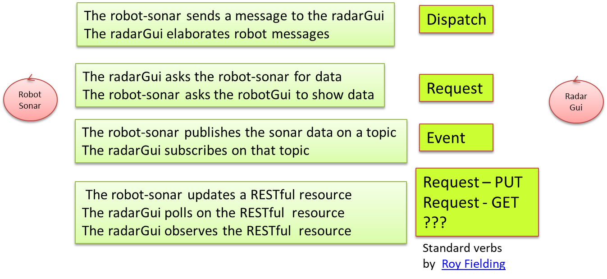

LabRadarGui | Radar GUI as a service
In this work we will build a radarGuiservice that shows data on a graphical interface that looks like the screen of a radar. These data could be:- simulated by an user, by using a proper utility; for example
sonarDataSimulator.kt that reads the data from a user console.
- produced by a HC-SR04 sonar device mounted on the front of a ddr robot (robot-sonar). For example,
SonarAlone.c that - on a RaspberryPi - reads sonar data from HC-SR04 and
writes these data on the standard output.

A bottom-up approach
In a bottom-up approach, the software designer must find a way to make the radar able to receive the sonar data produced by the robot-sonar. Thus, there are two main problems to solve:- Find a way to transmit data from the robot-sonar to the radarGui.
- Build a new radar component (the radarGuiservice indeed) able to receive sonar-data and to display them by using the available radarSupport.java
 |
The picture below shows two main component integration strategies:
 |
Direct communicationData might flow from the robot-sonar to the radarGui, by using a two-way point-to-point |
 |
Using a middlewareData might flow from the robot-sonar to the radarGui, by using a mediator, like a MQTT broker, a CoAP resource, a TupleSpace etc. |
In both cases we have to write proper code 'around' our starting available resources.
Interaction based on TCP
A direct communication based on some standard protocol (e.g. TCP) can be implemented in a quite easy way.The main project choice is related to question of the location of the server-TCP socket. The most 'natural' choice seems to activate a the server-socket on the node that runs the radarGui, by considering (in a IOT perspective) the radar as a 'service' used by the 'robot-as-thing'.
The task of building such a TCP-based system is left to the reader, with the goal to keep track of the time required to build a working prototype and to 'document' in a proper way the solution.
Interaction based on CoAP
sonarDataSimulatorCoap.ktResource.java
CoapSupport.java
RadarGuiCoap.java
A top-down approach
The robot-sonar is viewed as an autonomous source of data, while the radarGui is viewed as a service able to receive sonar data and to handle them in a proper way. |
|
Thus, in a top-down approach to software development, we aim at leaving technological details 'in the background' by focusing our attention on the 'logical-interaction' between our system components.
|  |
|